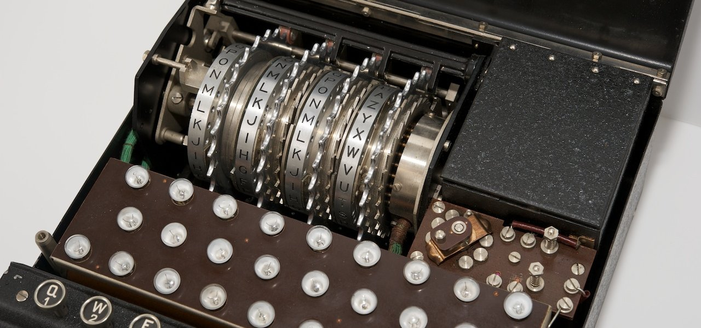

Egyptians protected their burial chambers and corn stores with drop-latch locks as long as 6000 years ago. Today’s lock cylinders are essentially based on the same principal.
4000 BC in Ancient Egypt
Wealth and income during the Industrial Revolution
- Adam Smith
The machine consists of four main components: the keyboard, plugboard, lampboard and rotors. When you press a key on the keyboard (L, for example), an electric signal is generated, which subsequently moves through all of these components to encrypt an alphabet.
The first stopping point of the electric signal (generated from the ‘L’) is the plugboard. Some of the letters on the plugboard might be connected to another letter (let’s say M). Now, the signal is diverted through ‘M’. The next stop is the static rotor, which doesn’t do anything to the signal, but it does turn the wires into contacts, since the signal can only pass when the contacts touch. The output of the static rotor acts as the input to the moving rotors. This is where most of the scrambling takes place.
